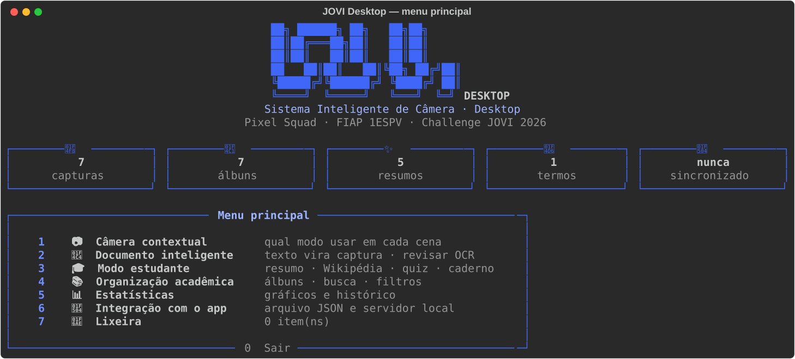
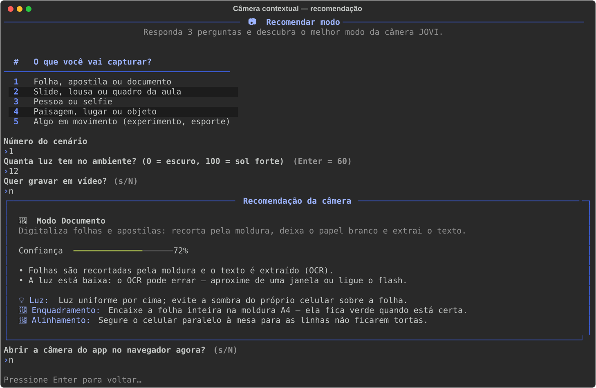
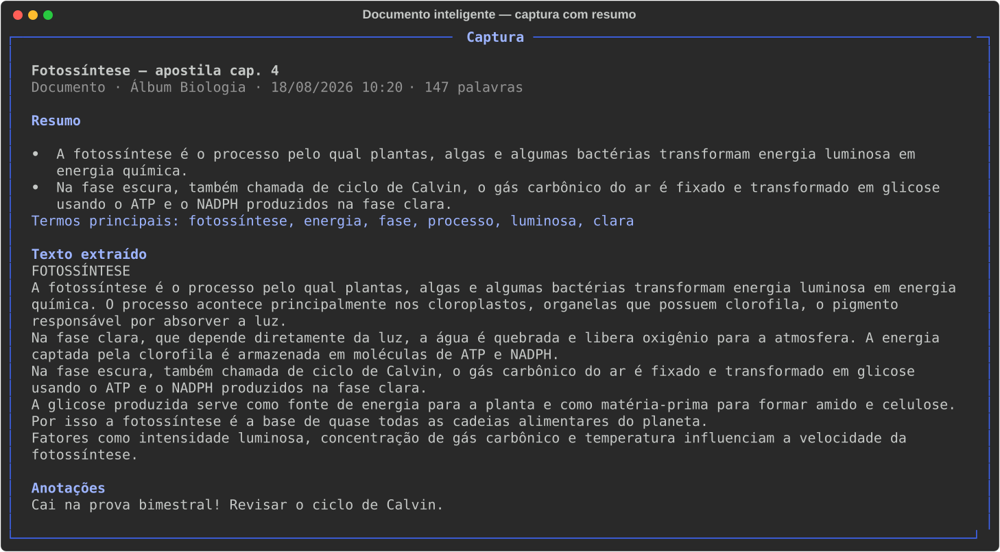
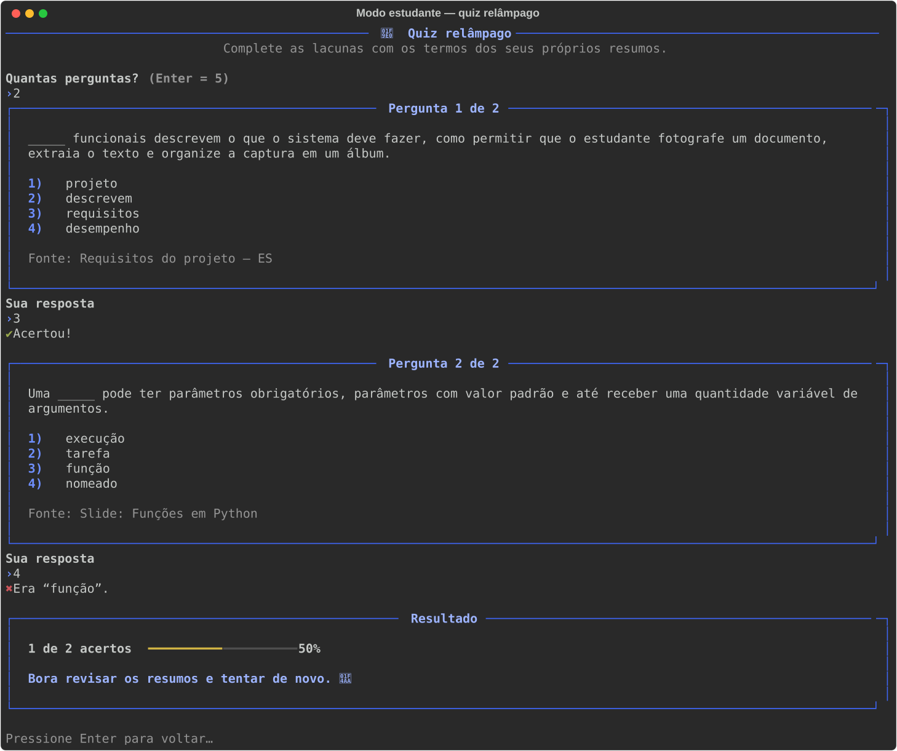
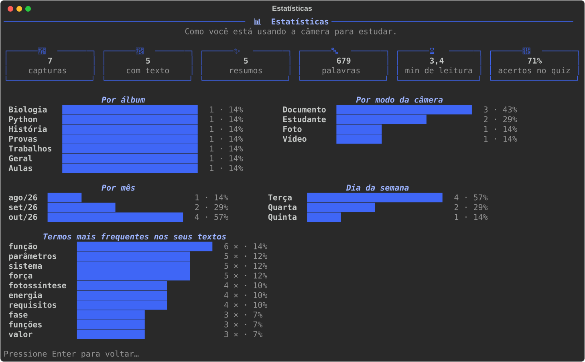
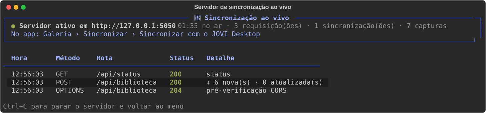

Sistema Inteligente de Câmera JOVI — módulo Python
Programa em Python integrado ao app React da câmera: recebe as capturas do estudante, gera resumos, explica termos pela Wikipédia, organiza matérias, faz quiz de revisão e devolve tudo ao app — por arquivo JSON ou por um servidor local de sincronização.

O documento descreve o programa entregue na Sprint 4 (seções 1 a 7) e justifica o que mudou em relação à Sprint 3 (seção 8).
O Challenge JOVI 2026 pede uma câmera de smartphone mais intuitiva, funcional e contextual para estudantes full-time, que conciliam estudos, vida social e trabalho e usam o celular para registrar aulas, slides e apostilas. A equipe construiu o Sistema Inteligente de Câmera JOVI: um app React com câmera real, OCR, resumo e organização por matéria.
O objetivo da parte em Python na Sprint 4 é entregar a implementação final dessa solução em Python, integrada ao restante do projeto, com persistência de dados e consumo de API externa:
O estudante fotografa dezenas de slides e páginas por semana, mas essas fotos raramente viram material de estudo: ficam perdidas no rolo da câmera, sem texto pesquisável, sem resumo e sem organização. O app resolve a captura; o JOVI Desktop resolve o que acontece depois da captura, no computador, onde o estudante de fato estuda e faz trabalhos.
Resumo extrativo das capturas, em lote, com os termos principais destacados.
Termos difíceis explicados pela Wikipédia e anexados às anotações da própria captura.
Quiz de lacunas montado a partir dos resumos do próprio estudante, com placar salvo.
Fazer isso em Python, e não só no navegador, também tem razão técnica: o programa guarda a biblioteca em arquivo (backup fora do navegador), gera arquivos Markdown prontos para o VS Code, Notion ou Obsidian e expõe a biblioteca por uma API local, abrindo caminho para outras integrações. Como o resumo foi portado de forma idêntica, o que é feito em um lado vale no outro.
A solução tem dois programas que compartilham uma única biblioteca de capturas, no mesmo formato de dados (jovi-biblioteca, versão 1):
dados/biblioteca.jsonWikipédia em português — GET pt.wikipedia.org/api/rest_v1/page/summary/{termo}, a mesma usada pelo app.
JSON com gravação atômica: capturas, álbuns, lixeira, histórico, cache de termos e partidas do quiz.
Cada arquivo tem uma responsabilidade. Os nomes dos módulos da Sprint 3 foram mantidos para que a evolução fique visível.
| Arquivo | Responsabilidade |
|---|---|
main.py | Ponto de entrada: carrega a biblioteca, mostra o painel inicial, roda o menu principal e salva depois de cada funcionalidade. |
jovi/interface.py | Visual do terminal com as cores do app: banner, menus, tabelas, painéis, gráficos de barra e medidores. |
jovi/entrada.py | Leitura de dados com validação (inteiros em faixa, textos, confirmações, caminhos de arquivo). |
jovi/persistencia.py | Leitura e gravação de JSON, recuperação de arquivo corrompido e histórico de ações. |
jovi/modelo.py | Modos da câmera, álbuns padrão e formato de captura, iguais aos do app. |
jovi/camera.py | Recomendação de modo pela cena e pela luz, com confiança e dicas. |
jovi/documento.py | Texto → captura, visualização completa e revisão do OCR. |
jovi/resumo.py | Resumo extrativo: porte fiel de src/lib/summarize.js. |
jovi/estudante.py | Resumos, anotações, Wikipédia, quiz, glossário e exportação Markdown. |
jovi/wikipedia.py | Cliente da API da Wikipédia, com cache. |
jovi/organizacao.py | Álbuns, busca, filtros, listagem e seleção de capturas. |
jovi/estatisticas.py | Números, gráficos, termos frequentes e relatório. |
jovi/lixeira.py | Remover, restaurar e esvaziar. |
jovi/integracao.py · jovi/servidor.py | Formato de troca, mesclagem com o app e servidor HTTP de sincronização. |
tests/ | 45 testes automatizados (unittest). |
O programa abre num painel com os números da biblioteca e o menu principal. Toda funcionalidade volta ao menu ao terminar. Nos submenus, 0 (ou Enter) volta; no menu principal, 0 – Sair salva e encerra. Na primeira execução, o programa oferece uma biblioteca de exemplo para testar tudo sem o app.
| Opção | Entrada | Processamento | Saída | Validações |
|---|---|---|---|---|
| 1 · Câmera contextual | Cenário (1–5), luz (0–100), quer vídeo (s/n) | Escolhe o modo do app; a confiança do modo Noite usa a mesma fórmula da sugestão do app (0,55 + (0,2 − luz) × 4). | Modo, confiança, motivos, dicas; abre a câmera no navegador já no modo | Número fora da faixa, letras, s/n inválido |
| 2 · Documento inteligente | Arquivo .txt/.md ou texto colado; título; álbum | Lê UTF-8 (ou Latin-1), sugere título, cria a captura; localizar/substituir no texto do OCR. | Nova captura (vai para o app); texto corrigido | Arquivo inexistente, extensão, vazio, > 1 MB, texto vazio |
| 3 · Modo estudante | Captura, tamanho do resumo, termo, respostas do quiz | Resumo extrativo (individual ou em lote, com barra de progresso); consulta à Wikipédia com cache; quiz com random; Markdown. | Resumo, explicação, nota anexada, placar, arquivo .md | Texto < 25 palavras, vídeo, termo inexistente, sem internet |
| 4 · Organização | Busca, filtros, nomes de álbum | Busca sem acentos em título/álbum/texto/notas; filtros por álbum, modo e tipo; renomear/excluir álbum move as capturas. | Tabelas de capturas; álbuns atualizados | Nome vazio, > 30 caracteres, duplicado, álbum “Geral” protegido |
| 5 · Estatísticas | — | Contagens com Counter, agrupamento por mês e dia da semana, termos mais frequentes, média do quiz. | Cartões, gráficos de barra, histórico, relatório .md | Biblioteca vazia mostra “sem dados” |
| 6 · Integração | Arquivo .json do app; porta do servidor | Valida o formato, mescla por id/data, exporta, sobe o servidor HTTP. | Relatório da sincronização; arquivo para o app | Formato/versão, capturas inválidas, porta ocupada |
| 7 · Lixeira | Item a restaurar | Move entre as listas capturas e lixeira. | Captura restaurada ou apagada | Confirmação antes de apagar |
O estudante responde três perguntas e recebe o modo do app, a confiança da recomendação e dicas de luz, enquadramento e alinhamento. No fim, pode abrir a câmera do app no navegador já no modo recomendado (/camera?modo=estudante).

Cada captura pode ser vista por completo: metadados, resumo, termos principais, texto extraído e anotações. O texto do OCR pode ser corrigido com localizar/substituir, e o resumo é marcado como desatualizado quando o texto muda, como no app.

As perguntas são frases dos resumos do próprio estudante com um termo principal escondido. As alternativas erradas vêm, de preferência, da mesma matéria, o que torna a revisão útil. O placar é salvo e entra nas estatísticas.


O PDF da Sprint pede integração “por meio de arquivos ou API”. A solução oferece as duas, sobre o mesmo formato e a mesma regra de mesclagem, implementada em Python (jovi/integracao.py) e em JavaScript (src/services/libraryTransfer.js).
No app: Galeria › Sincronizar › Exportar biblioteca. No Python: 6 › 1 Importar do app (o arquivo é encontrado na pasta Downloads). Depois 6 › 2 Exportar para o app e, no app, Importar biblioteca.
No Python: 6 › 3 ou python python/main.py --servidor. No app: Sincronizar com o JOVI Desktop. Uma requisição envia as alterações do navegador e devolve as do Python.

{
"formato": "jovi-biblioteca", "versao": 1, "origem": "app",
"albuns": ["Geral", "Aulas", "Biologia"],
"capturas": [{ "id": "…", "createdAt": "…", "updatedAt": "…", "kind": "photo", "mode": "documento",
"album": "Biologia", "title": "…", "text": "…", "summary": {…}, "notes": "…",
"thumbDataUrl": "data:image/jpeg;base64,…" }],
"excluidas": ["id-de-captura-excluida"]
}
id. Vence a versão com updatedAt mais recente, e só os campos editáveis mudam: título, álbum, texto, resumo, anotações e status do OCR.| Endpoint | Descrição |
|---|---|
GET /api/status | Estado do servidor e totais (o app usa para mostrar “JOVI Desktop conectado”). |
GET /api/biblioteca | Biblioteca completa no formato de troca. |
POST /api/biblioteca | Recebe a biblioteca do app, mescla, salva em JSON e devolve a biblioteca mesclada com um relatório. Respostas 400 (JSON inválido), 413 (corpo grande), 422 (formato) e 500 (falha ao salvar). |
GET /api/estatisticas | Os mesmos números do menu Estatísticas. |
O servidor escuta apenas em 127.0.0.1 e só responde a origens do próprio app (localhost ou app-camera-jovi.vercel.app); outros sites recebem 403. Por isso funciona tanto com npm run dev quanto com o app publicado na Vercel.
Resumo idêntico nos dois lados. O resumo.py reproduz o algoritmo do app, inclusive o arredondamento do JavaScript e o hash em unidades UTF-16. Um resumo gerado no Python é aceito pelo app como atual, sem o aviso “o texto mudou”. Um teste compara 24 casos com as saídas do próprio summarize.js.
A lógica fica em funções pequenas e testáveis, que recebem dados por parâmetro e devolvem resultados. As telas (_tela_*) só leem a entrada, chamam essas funções e mostram o retorno.
| Função | Parâmetros | Retorno | Finalidade |
|---|---|---|---|
camera.recomendar_modo | cenario, luminosidade, quer_video | dict | Modo, confiança e motivos |
resumo.resumir | texto, tamanho | dict | Frases e termos do resumo |
resumo.impressao_texto | texto | str | Hash compatível com o app |
documento.ler_arquivo_texto | caminho | str | Lê .txt/.md com fallback de codificação |
documento.substituir_no_texto | texto, procurar, trocar_por, ignorar_maiusculas | tuple | Novo texto e número de trocas |
estudante.aplicar_resumo | biblioteca, captura, tamanho | dict | Gera e salva o resumo |
estudante.gerar_perguntas | capturas, quantidade, rng | list | Perguntas do quiz |
organizacao.validar_nome_album | biblioteca, nome, ignorar | tuple | (válido, nome ou erro) |
organizacao.buscar / filtrar | capturas, consulta / album, modo, tipo | list | Capturas encontradas |
estatisticas.calcular_estatisticas | biblioteca | dict | Todos os números do painel |
wikipedia.buscar_com_cache | termo, cache | tuple | (explicação, veio do cache) |
integracao.mesclar | biblioteca, albuns, recebidas, excluidas | dict | Relatório da sincronização |
persistencia.carregar_biblioteca | caminho | tuple | (biblioteca, aviso) |
entrada.ler_inteiro | mensagem, minimo, maximo, padrao | int | Número validado |
A biblioteca é um dicionário com listas de dicionários: capturas, lixeira, historico e quiz são listas; cacheTermos é um dicionário indexado pelo termo normalizado; MODOS, CENARIOS e DICAS são dicionários de configuração. Há compreensões de lista nos filtros, dict.fromkeys para unir álbuns sem repetir, collections.Counter nas estatísticas e collections.deque no log do servidor.
| Onde | Exceções tratadas | O que o usuário vê |
|---|---|---|
entrada.ler_inteiro | ValueError no int() | “‘abc’ não é um número inteiro. Digite um valor de 1 a 5.” e nova pergunta |
persistencia.ler_json | FileNotFoundError, JSONDecodeError, UnicodeDecodeError, OSError | Mensagem com linha e coluna do erro; arquivo corrompido vira backup e o programa segue |
persistencia.salvar_json | OSError (disco cheio, sem permissão) | Aviso de que os dados seguem na memória; o temporário é apagado |
wikipedia.buscar_termo | Timeout, ConnectionError, RequestException, JSON inválido, 404, desambiguação | “Sem conexão com a internet.” ou “A Wikipédia não tem um artigo…”; o glossário continua offline |
documento | UnicodeDecodeError (tenta Latin-1), OSError, ValueError | “O arquivo está vazio.”, “grande demais”… |
servidor | OSError (porta ocupada), JSONDecodeError, ErroFormato | Pede outra porta; responde 400/422 ao app |
main | KeyboardInterrupt, EOFError, ModuleNotFoundError | Ctrl+C cancela e volta ao menu; dependência ausente explica o pip install |
Também foram criadas exceções próprias (ErroPersistencia, ErroFormato, TermoNaoEncontrado, FalhaDeConexao) para separar o tipo de falha da mensagem mostrada.
_tela_*), módulos com responsabilidade única, nomes descritivos em português e docstrings.LIMIAR_POUCA_LUZ, MAX_NOME_ALBUM, TEMPO_LIMITE) em vez de números soltos.python -m unittest discover -s python/tests): paridade do resumo com o JavaScript, mesclagem, servidor HTTP, persistência, câmera, álbuns, quiz e a API simulada com unittest.mock.Requisitos: Python 3.10 ou superior (testado no 3.12). Na raiz do projeto:
# 1. ambiente virtual e dependências (rich e requests) python -m venv python/.venv python\.venv\Scripts\activate # Windows source python/.venv/bin/activate # macOS / Linux pip install -r python/requirements.txt # 2. executar python python/main.py # menu interativo python python/main.py --servidor # direto no servidor de sincronização # 3. testes python -m unittest discover -s python/tests
Para testar a integração: com o servidor ligado, abra o app (npm run dev ou app-camera-jovi.vercel.app), entre com Acessar a câmera e vá em Galeria › Sincronizar › Sincronizar com o JOVI Desktop. Com a biblioteca de exemplo, seis capturas aparecem na Galeria com resumo, notas e capa. Se o navegador pedir acesso à rede local, permita. Use um terminal com cores e emojis (Windows Terminal, VS Code, PowerShell 7).
Na Sprint 3, o Python era um app Streamlit separado do projeto (app.py, camera.py, documento.py, estudante.py, organizacao.py), com captura, OCR e resumo simulados e dados apenas em st.session_state. A Sprint 4 pede a implementação final integrada à solução, com persistência e API externa. Por isso o código foi reconstruído dentro do repositório do app, mantendo os quatro módulos como base.
| O que saiu | Por quê |
|---|---|
Interface Streamlit (app.py, streamlit no requirements) | A Sprint 4 avalia um menu de opções que volta ao menu principal e tem opção de finalizar. No Streamlit, o “Encerrar” só parava a tela e o servidor continuava rodando. O programa de terminal cumpre o fluxo pedido e encerra de fato. |
st.session_state como armazenamento | Os dados sumiam ao fechar a aba. Agora tudo fica em dados/biblioteca.json. |
capturar_imagem, digitalizar_documento, realizar_ocr (simulações) | A captura e o OCR reais já existem no app (câmera do navegador + Tesseract.js). O Python passou a trabalhar sobre esses dados reais em vez de inventar um texto fixo. |
| Resumo “20 primeiras palavras + …” | Não era um resumo. Foi substituído pelo resumo extrativo do app. |
| Matérias iniciais fixas e categorias “Anotação/Documento/Resumo” | Passaram a ser os álbuns do app e o modo/tipo real de cada captura, para os dois lados falarem a mesma língua. |
| Módulo | Sprint 3 → Sprint 4 | Por quê |
|---|---|---|
camera.py | analisar_contexto(contexto) → recomendar_modo(cenario, luminosidade, quer_video), que devolve um dicionário com modo, confiança e motivos. Novos cenários (slide → Estudante, movimento/vídeo). gerar_assistencia agora é por modo. | Recomendar os modos que existem de verdade no app, com a mesma regra de pouca luz da sugestão automática dele, e abrir a câmera no navegador. |
documento.py | revisar_texto agora edita uma captura real, atualiza o status do OCR e o título automático. Novos: importação de .txt/.md, localizar/substituir e visualização completa. | Corrigir erros reais do OCR sem redigitar e trazer anotações de outros lugares para o app. |
estudante.py | gerar_resumo → aplicar_resumo (algoritmo real em resumo.py). criar_anotacao/editar_anotacao → anotações com data na própria captura. exportar_conteudo (TXT) → Markdown por captura ou por álbum, com glossário. | O resumo e as notas precisam valer no app, e o material exportado precisa ser útil de verdade. |
organizacao.py | adicionar_materia → criar_album, com as regras do app (até 30 caracteres, sem duplicar ignorando maiúsculas). organizar_material/corrigir_organizacao → mover_captura/renomear_captura. Novos: renomear/excluir álbum, busca e filtros. | A organização feita aqui aparece na Galeria do app depois da sincronização. |
| Interface | Widgets do Streamlit → painéis, tabelas, barras de progresso e gráficos com Rich. Validação centralizada em entrada.py. | Mensagens claras, navegação por números e a identidade visual do app. |
| Novidade | Para que serve |
|---|---|
persistencia.py | Persistência em JSON com gravação atômica e recuperação de arquivo corrompido (requisito da Sprint 4). |
wikipedia.py | Consumo de API externa (requisito da Sprint 4), com cache offline e tratamento de erros. |
integracao.py + servidor.py | Integração com o restante da solução, por arquivo e por API (requisito da Sprint 4). |
| Botão Sincronizar no app React | Lado do app da integração: libraryTransfer.js, syncApi.js, o hook useLibrarySync e a SyncSheet, com testes no Vitest. |
resumo.py | Porte fiel do resumo do app, validado por teste de paridade. |
| Quiz, glossário, estatísticas, histórico e lixeira | Revisão ativa, acompanhamento do estudo e segurança contra exclusão acidental. |
Biblioteca de exemplo e --servidor | Testar tudo sem o app e subir a sincronização com um comando. |
| 45 testes automatizados | Garantir as regras de negócio e a compatibilidade com o app. |